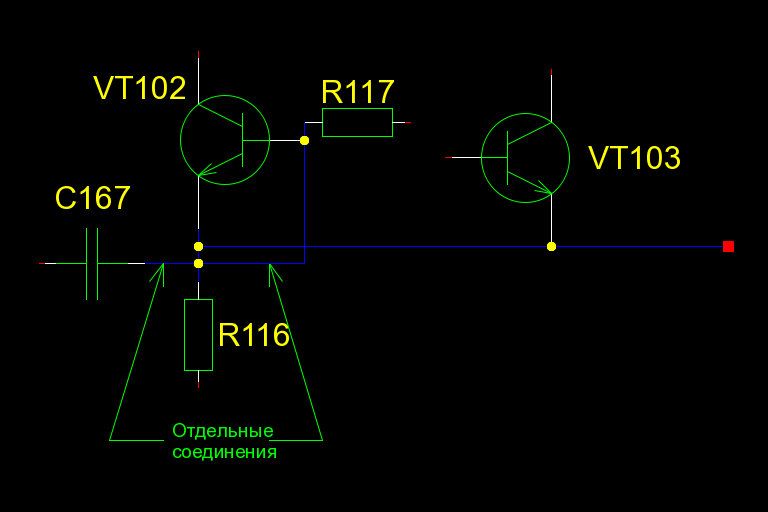

Для gnetlist есть пять
разных драйверов экспорта перечня элементов. Они вызываются с помощью ключа
-g, при этом ключом -o необходимо задать имя выходного файла:
gnetlist -g partslist3 -o output.bom schematic.sch
gnetlist спускается в листы подсхем и перечисляет их содержимое
вместе с компонентами из основного документа.
Для драйверов bom и bom2 должен быть доступен на чтение локальный файл
attribs. В этом файле в виде отдельных строк должны содержаться
имена атрибутов, которые должны быть приведены в перечне. Например:
value
footprint
description
Драйверы по-разному перечисляют и сортируют компоненты в текстовом файле.
Выберите тот, который вам больше нравится:
Драйверу bom нужен файл attribs (см. выше). В перечне,
произведённом с помощью -g bom, будет содержаться столько строк,
сколько имеется компонентов. Столбцы разделяются знаками табуляции. Строки не
сортируются.
Драйверу bom2 также нужен файл attribs. С помощью -g bom2
одинаковые позиционные обозначения компонентов будут собраны в одну строку.
Столбцы разделяются двоеточиями. Несколько элементов в одном и том же столбце
разделяются запятыми.
Перечень, производимый драйвером partlist1, содержит строки для каждого
компонента. Строки сортируются в алфавитном порядке по позиционному
обозначению (refdes). Используются столбцы refdes, device,
value, footprint и quantity. Так как каждая строка содержит только
один компонент, количество (quantity) всегда равно 1.
Данный драйвер производит вывод, подобный выводу partslist1. Строки
сортируются по значению атрибута device.
Драйвер partslist3 собирает все компоненты с одинаковым значением в одну
строку, очень похоже на bom2. Строки сортируются по атрибутам value и
device. Четвёртый столбец сообщает количество компонентов в строке.
Столбцы разделяются знаками табуляции, элементы — пробелами.
Можно проверять схемы с помощью драйвера drc2 для gnetlist. Он
проверит схемы на предмет самых общих ошибок, таких как одинаковые
обозначения, неподключенные выводы, неиспользуемые
секции многосекционных компонентов и прочее.
Запустите драйвер drc2 следующей командой:
gnetlist -g drc2 -o MyDesign.drc MyDesign.sch
Этой командой указывается, что вывод DRC
(проверки на соответствие проектным нормам)
должен записываться в файл
MyDesign.drc. Затем этот файл можно открыть в текстовом редакторе и
посмотреть предупреждения и ошибки DRC.
Запустите драйвер drc2 следующей командой:
gnetlist -g drc2 -o - MyDesign.sch
Вы увидите вывод DRC непосредственно на экране.
Драйвер drc2 очень гибко настраивается. Вам нужно записать в файл
несколько специальных команд и вызвать gnetlist с ключом -l, задав
после него имя этого файла.
Наиболее общие команды:
(define dont-check-non-numbered-parts 1) ;; Запретить проверку на ненумерованные компоненты
(define dont-check-duplicated-references 1) ;; Запретить проверку на одинаковые обозначения
(define dont-check-one-connection-nets 1) ;; Запретить проверку на соединения с одним единственным подключением
(define dont-check-pintypes-of-nets 1) ;; Запретить проверку типа выводов
(define dont-check-not-driven-nets 1) ;; Запретить проверку на соединения, не имеющие питающих подключений
1) (define dont-check-unconnected-pins 1) ;; Запретить проверку на неподключенные выводы
(define dont-check-duplicated-slots 1) ;; Запретить проверку на дублирование секций многосекционных компонентов
(define dont-check-unused-slots 1) ;; Запретить проверку на неиспользуемые секции многосекционных компонентов
(define dont-check-slots 1) ;; Запретить проверку на количество секций многосекционных компонентов
(define action-unused-slots #\w) ;; Вывести сообщение о неиспользуемых секциях многосекционных компонентов как предупреждение
(define action-unused-slots #\e) ;; Вывести сообщение о неиспользуемых секциях многосекционных компонентов как ошибку
(define action-unused-slots #\c) ;; Считать нормой наличие неиспользуемых секций многосекционных компонентов
(define case_insensitive 1) ;; Все проверки производить без учёта регистра символов
Есть и несколько других продвинутых команд для изменения матрицы DRC и типов
выводов, которые можно считать питающими подключениями. Посмотрите файл драйвера
gnet-drc2.scm в текстовом редакторе. Там, в начале, есть документация.
Скопируйте нужное вам из вышеуказанных строк в файл (например,
drc_rules.txt), причём каждая команда должна записываться отдельной
строкой, и запустите проверку:
gnetlist -g drc2 -l drc_rules.txt -o MyDesign.drc MyDesign.sch
Вывод DRC записывается этой командой в файл MyDesign.drc. Этот файл
можно затем открыть в текстовом редакторе и посмотреть предупреждения и ошибки.
Да. Драйвер drc2 возвратит код ошибки, если есть ошибки или
предупреждения, поэтому можно добавить в свой Makefile следующее:
$(objects).drc : $(objects).sch
gnetlist -g drc2 $(objects).sch -o $(objects).drc
Если вы собираетесь моделировать работу своей схемы, в Makefile можно добавить
следующее:
$(objects).cir : $(objects).sch $(objects).drc
grep -v ERROR $(objects).drc >/dev/null 2>&1
gnetlist -g spice-sdb $(objects).sch -o $(objects).cir
Если нет, возьмите вышеуказанный пример и адаптируйте его для
используемого вами рабочего процесса.
Используйте ключ -O ignore-warnings-in-return-value:
gnetlist -g drc2 -o - MyDesign.sch -O ignore-warnings-in-return-value
Будьте осторожны с этим! Вы вообще никаких предупреждений не увидите!
Начиная с Fedora Core 6 и SuSE 10.2, многие пользователи сообщали
об ошибке, выглядящей подобным образом:
$gnetlist -g spice-sdb -o TwoStageAmp.cir TwoStageAmp.sch
Command line passed = gnetlist -g spice-sdb -o TwoStageAmp.cir TwoStageAmp.sch
gEDA/gnetlist version 20061020
gEDA/gnetlist comes with ABSOLUTELY NO WARRANTY; see COPYING for more details.
This is free software, and you are welcome to redistribute it under certain
conditions; please see the COPYING file for more details.
Remember to check that your schematic has no errors using the drc2 backend.
You can do it running 'gnetlist -g drc2 your_schematic.sch -o drc_output.txt'
and seeing the contents of the file drc_output.txt.
Loading schematic [/home/nano/TwoStageAmp/TwoStageAmp.sch]
Probably parenthesis mismatch in /usr/share/gEDA/scheme/gnet-spice-sdb.scm
Most recently read form: (#@begin #<unspecified>)
ERROR: Unbound variable: spice-sdb
Эта проблема обнаруживается для нескольких драйверов gnetlist,
включая spice-sdb и drc2.
Это программная ошибка в guile-1.8.X. Разработчики gEDA работают над
исправлением. Пока попробуйте откатить guile к версии 1.6.7, которая, как
известно, работает с gEDA безупречно.
Если при запуске gnetlist следующим образом
gnetlist -g bom filename.sch
выводится сообщение об ошибке
Loading schematic [filename.sch]
ERROR: In procedure open-file:
ERROR: No such file or directory: "attribs"
то вам нужно создать файл attribs в текущем каталоге, содержащий
атрибуты, которые вы хотите увидеть в bom-файле. Вот пример такого файла:
device
value
Информацию по созданию BOM смотрите
выше.
Если при обработке определённой схемы большого размера некоторыми драйверами вы
получаете такое сообщение об ошибке
ERROR: Stack overflow
добавьте следующее в файл ~/.gEDA/gnetlistrc или локальный
gnetlistrc (в текущем рабочем каталоге):
(debug-options (list 'stack 200000))
(eval-options (list 'stack 200000))
Если так не заработает, отредактируйте соответствующий драйвер (обычно с
названием gnet-имя_драйвера.scm) и добавьте вышеуказанные строки в
начало данного файла. Драйверы gnetlist можно найти в каталоге
${prefix}/share/gEDA/scheme. Также отправьте электронное письмо в
рассылку geda-user, чтобы напомнить разработчикам исправить это. Запомните,
прежде чем писать в geda-user, вам нужно подписаться на этот список
рассылки.
Было по крайней мере одно сообщение о следующей ошибке, выдаваемой pcb
после загрузки списка соединений, созданного с помощью gnetlist:
28: Error! Element R117 pin 2 appears multiple times in the netlist file.
29: Error! Element C167 pin 2 appears multiple times in the netlist file.
Что здесь произошло? gnetlist (а в самом деле libgeda) создал два
соединения вместо одного. Это происходит, когда вывод присоединяется в точке
пересечения двух соединений. Заметьте, что пересекающиеся соединения не
подключены друг к другу. Это демонстрирует следующая схема:

Пока разработчики спорят, считать ли это ошибкой gnetlist или нет, вам
следует обеспечить, чтобы соединения, особенно там, где выводы подключаются и
к другим соединениям, были начерчены явно. Как вышеуказанные соединения должны
вычерчиваться, чтобы список соединений создавался правильно, показано на
этом рисунке:
